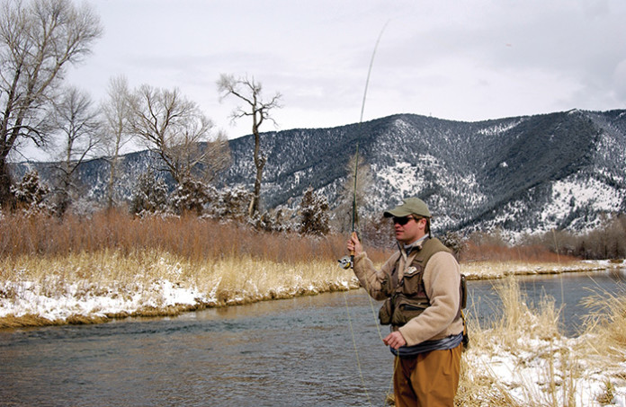

<<!DOCTYPE html>
  <html lang="en" dir="ltr">

  <head>
    <meta charset="utf-8">
    <title>Winter</title>
    <link href="seasons.css" rel="stylesheet" type="text/css">
  </head>

  <body>
    <div id="wrap">
      <header>
        
      </header>

      <nav>
        <ul>
          <li><a href="seasons.html">Home</a></li>
          <li><a href="summer.html">Summer</a></li>
          <li><a href="winter.html">Winter</a></li>
          <li><a href="fall.html">Fall</a></li>
          <li><a href="spring.html">Spring</a></li>
        </ul>
      </nav>

      <section>
        <h1>Winter Fly Fishing</h1>
      </section>

      <footer>
        <p>Winter fly fishing in Montana is mostly a game of nymph fishing, but there are exceptions. There are different patterns highly recommended. Stonefly patterns, egg patterns, and midge larva are a good choice. The most significant part of
          nymphing during winter is in getting a slow drag free drift.</p>
      </footer>
    </div>
    <!--Close Wrap-->
  </body>

  </html>
